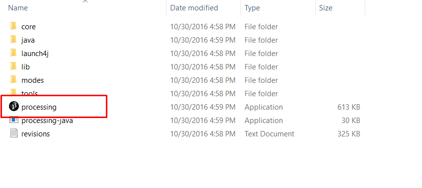
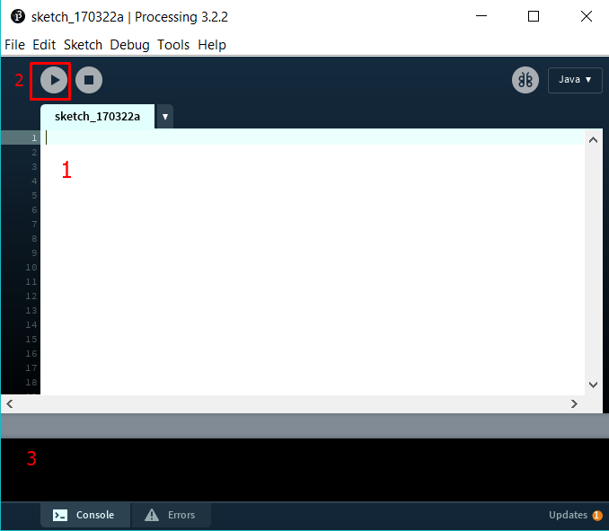
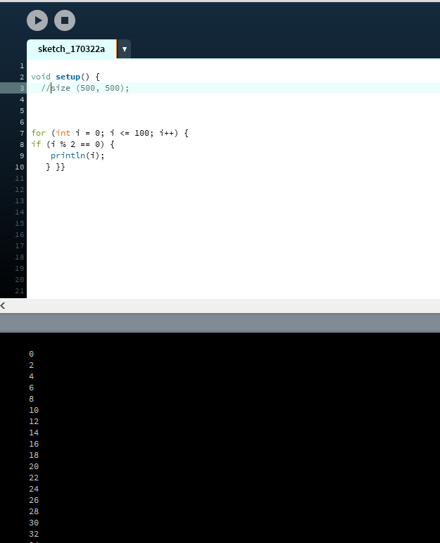

All we need is to install "Processing". It easy to download and easy to work with it ( so we can say it is beginer friendly). To get it, Go here and download it .
After you have dowloaded it, you should have a folder like the following one
 The icon fromt he red box is what we are going to work with. It is basically the "Processing" software itself.
Now let's open it
The white box with number 1 is out workspace. This is where we will write our code The icon with number 2 is the button "Run". When we have finished with our code, we click on it to compile(to see if we have any errors in the code) and it will start the program to run. The black box with number 3 is the "console log". There is the place which will tell us if we ahve errors ( flaws our code has and does not allow us to run it), warnings ( some suggestions for the code; this does not mean that the code will not run). We can use the console log to print things ( for exaple we want to print some even numbers). Thi is the place where it will be displayed.
Now let's add some code and click on run.
Here we have some code that basically prints out the even number between 0 and 100. As you can see, the numbers are printed in the console log.
If we wanted to do something graphic( for example to display house drawing or some cirles that are moving) a box will appear.
All of the games that we have prepared for you will be interactive and with a lot of fun.
1. We will use some 3 important "control statements" : if(...) else, while, for . The if statement can execute a statement only once( for example if a number x can be divided by 2, the computer prints out x is even"). We can also add the else statement, but it is not necessary, only if we wanted to.The else statement will do something else if the first condition is not done ( for example, if x can be divided by 2, the computer will print that "x is even" , else it will print "x is odd").The for loop can be executed for a certain number of times( or takes a certain ammount of steps). We used the for loop on our first example : we checked all the numbers between 0 and 100, so we had 101 steps. We use the "while" loop whenever we don't know how many steps we need to make.( for example we have a number x and we want to divide it to 2 until it is equal to 1).
If you still believe that you did not get it, check out how Bill Gates explains the if statement or how Mark Zuckerberg explains the loops
2. We will need some objects in our games.They are used to represent something from the real life and we use it at programming. For example, we make a program that displays animals. Let's make an animal object; an animal has a name, has some sort of color and does a speicifc sound. For example : a cat is an animal that is white ( can be any colour, I just choose one) and does "meow!". As you can see, an objects has some features/attributes and we will use some objects in our codes ( for example to do the Snake game, we will need a snake object).
3.You might see something like "void setup()" or "void draw()" in manny of our codes. It runs oncec the programs starts. We use it to define propreties like the size of the screen, to give the background a ccertain colour. Draw starts only after setup and runs continously. It is the plae where the important code is ( for example the code we need if we have some balls that continously bounce); it also constantly updates the screen